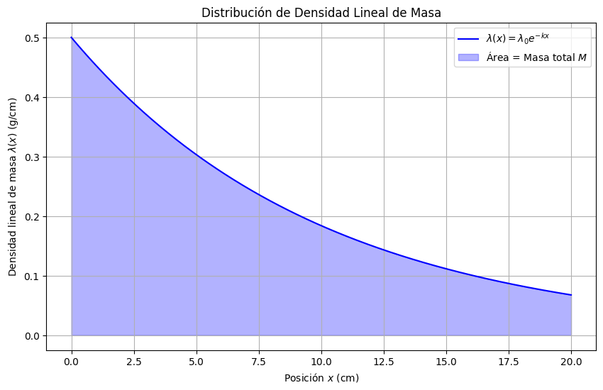

Masa Total a partir de una Distribución de Densidad#
ADVERTENCIA
Esto es una propuesta y todavía tiene que editarse
Contexto Teórico
Si la densidad lineal de masa \( \lambda(x) \) (masa por unidad de longitud) varía con la posición \( x \), la masa total \( M \) en el intervalo \([a, b]\) se calcula como:
Enunciado
La densidad lineal de masa de una barra de material radiactivo varía con la posición \( x \) (en cm) como:
\[ \lambda(x) = \lambda_0 e^{-k x} \]Donde \( \lambda_0 = 0.5 \, \text{g/cm} \) y \( k = 0.1 \, \text{cm}^{-1} \). Calcular la masa total \( M \) de la barra si su longitud es \( L = 20 \, \text{cm} \).
Graficar \( \lambda(x) \) y el área bajo la curva (que representa la masa total).
Interpretar físicamente:
¿Por qué la masa total es finita a pesar de que la barra tiene una longitud infinita teórica?
¿Cómo afecta el valor de \( k \) a la distribución de masa a lo largo de la barra?
Solución
Cálculo de la Masa Total \( M \)
Sustituyendo los valores:
Resultado:
import numpy as np
import matplotlib.pyplot as plt
from scipy.integrate import quad
# Parámetros
lambda_0 = 0.5 # g/cm
k = 0.1 # cm^-1
L = 20.0 # cm
# Posiciones x
x = np.linspace(0, L, 500)
# Densidad lineal de masa lambda(x)
lambda_x = lambda_0 * np.exp(-k * x)
# Masa total M (área bajo la curva)
M, _ = quad(lambda x: lambda_0 * np.exp(-k * x), 0, L)
print(f"Masa total M = {M:.4f} g")
# Gráfica
plt.figure(figsize=(10, 6))
plt.plot(x, lambda_x, label="$\\lambda(x) = \\lambda_0 e^{-k x}$", color="blue")
plt.fill_between(x, lambda_x, alpha=0.3, color="blue", label="Área = Masa total $M$")
plt.xlabel("Posición $x$ (cm)")
plt.ylabel("Densidad lineal de masa $\\lambda(x)$ (g/cm)")
plt.title("Distribución de Densidad Lineal de Masa")
plt.legend()
plt.grid(True)
plt.show()
Masa total M = 4.3233 g
